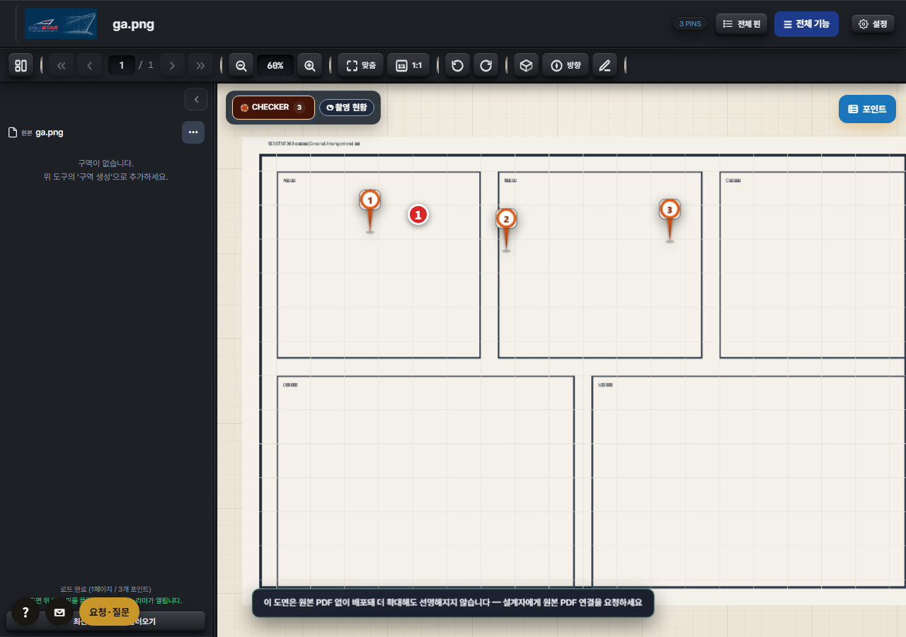
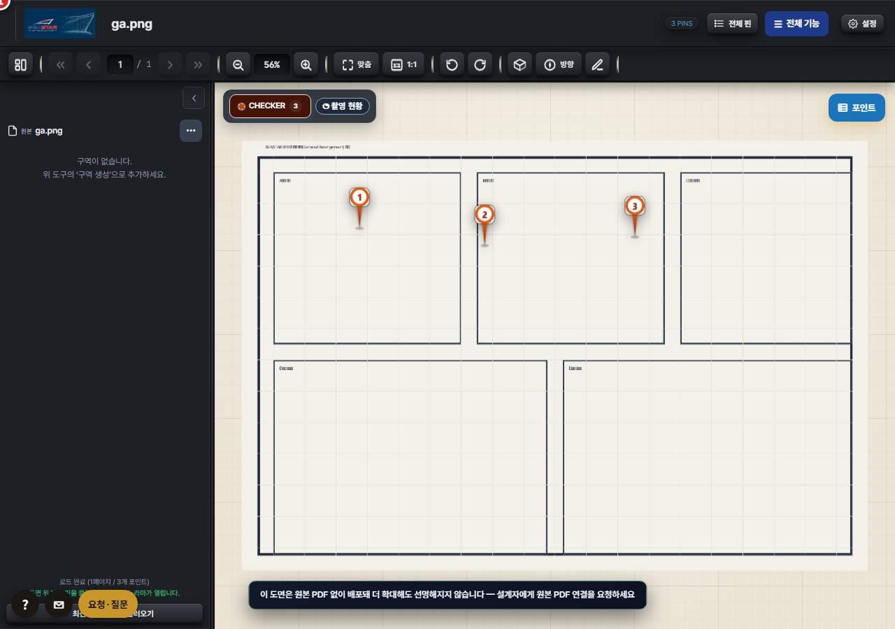
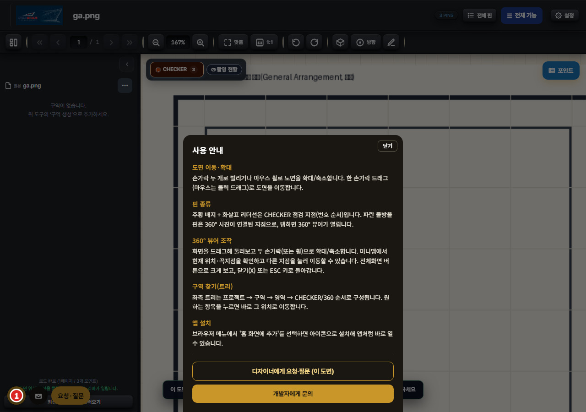

이 설명서는 "CHECKER 만" 모드로 발급된 열람 링크를 받은 분을 위한 것입니다. 이 링크에서는 번호가 매겨진 점검 포인트(핀)와 리더선만 보이고, 360 사진·360 뷰어는 보이지 않습니다(서버가 데이터 단계에서 걸러서 보냅니다).
전달받은 열람 링크(https://…?mode=viewer&d=…&lk=…)를 누르면 로그인 없이 바로 도면이 열립니다. 상단에 CHECKER 배지와 포인트 수가 표시됩니다 — 이 숫자가 CHECKER 포인트 개수입니다(360 포인트는 세지 않습니다).

상단 도구줄의 돋보기(+/−) 버튼이나 마우스 휠로 확대·축소합니다. 화면을 드래그하면 도면이 움직입니다. 휴대폰에서는 두 손가락으로 벌리거나 모아 확대·축소(핀치 줌)합니다. [맞춤] 버튼을 누르면 도면 전체가 화면에 맞춰집니다.
좌상단 메뉴 아이콘을 누르면 프로젝트 → 구역 → 영역 구조의 트리가 열립니다. 트리에서 다른 구역을 선택하면 그 구역의 CHECKER 포인트로 화면이 바뀝니다.

도면 위 주황색 물방울 모양이 CHECKER 번호 핀입니다. 숫자는 점검 순서/번호입니다. 리더선이 있는 핀은 번호 풍선이 핀에서 선으로 이어져 표시됩니다(겹치는 핀을 구분하기 위함).
핀을 누르면 그 포인트의 정보 카드가 열립니다. CHECKER 포인트는 사진을 등록하지 않는 모드이므로 "번호만 · 사진은 360 모드에서"라는 안내가 보일 수 있습니다 — 정상입니다. 카드 아래에서 메모·요청을 남길 수 있습니다.
상단 [전체 핀] 버튼을 누르면 이 구역의 CHECKER 포인트를 목록으로 볼 수 있습니다(번호·이름으로 검색 가능). 보고서·인쇄는 [전체 기능] 메뉴의 보고서 항목에서 PDF로 저장하거나 인쇄할 수 있습니다. 보고서에도 CHECKER 포인트만 담깁니다.
화면 아래 [요청·질문] 버튼을 누르면 담당자에게 메시지를 보낼 수 있습니다. 특정 포인트에 대한 요청이면 그 핀을 먼저 연 뒤 작성하면 포인트가 함께 기록됩니다.
화면 아래 물음표(?) 버튼을 누르면 설명이 필요한 버튼 옆에 작은 "?" 표시가 나타납니다. 그 표시를 누르면 그 버튼의 쓰임이 바로 뜹니다. 다시 누르면 꺼집니다.

한 번 열어본 도면은 인터넷이 끊겨도 다시 볼 수 있도록 자동으로 보관됩니다. 홈 화면에 앱처럼 설치하려면 브라우저 메뉴의 "홈 화면에 추가"(iOS) 또는 설치 안내 배너(Android/PC)를 사용하세요.